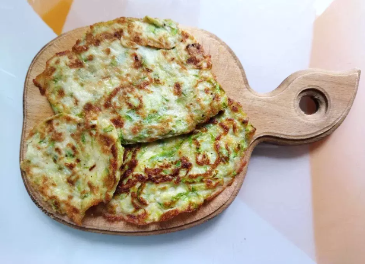
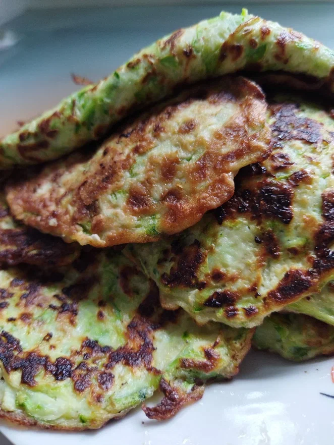

Готовые оладьи из кабачковПростое и вкусное летнее блюдо. В данном рецепте указаны пропорции на один кабачок. В зависимости от
того,
сколько нужно приготовить, соответственно увеличивать пропорции. Обычно готовится 2-4 средних кабачка.
Продукты:
Способ приготовления:
- Старый кабачок очистить от краёв, кожуры и семечек - Молодой кабачок натереть на тёрке полностью (обрезав края)
Натёртый кабачок положить в дуршлаг, немного отжать в миску
Посолить натёртый кабачок (он начнёт сильно пускать сок и появится немного пенки), сильно отжать
руками
несколько раз от жидкости,
пока не станет вытекать по чуть-чуть
Дать постоять постекать в дуршлаге над миской полчаса (или на ночь в холодильник)
Переложить натёртый кабачок в миску, немного поперчить
Добавить яйцо (одно большое яйцо на один средний кабачок), размешать
Добавлять по чуть-чуть муку, размешивать до густоты как у теста для оладьев
Столовой ложкой выкладывать каждый оладушек на раскалёную сковороду, смазанную маслом, сформировать
оладьи по размеру
Обжаривать на маленьком огне до лёгкого подрумянивания краёв, и потом переворачивать